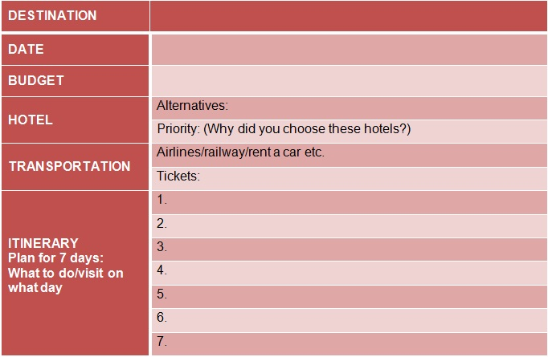

| PROCESS
| PROCESS| | PROCESS |
| INTRODUCTION |
TASK |
PROCESS |
EVALUATION |
CONCLUSION |
TEACHERS |
|
|
Please write the answers in the table
below.

Some additional sites to look at:
Yahoo! Travel (http://travel.yahoo.com)
Expedia (http://expedia.com)
Priceline (http://priceline.com)
Fodors (http://fodors.com) Kayak
(http://kayak.com) |
| Continue to the EVALUATION
by clicking here |